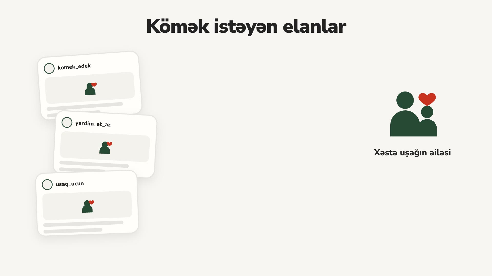
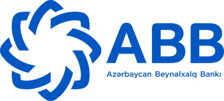
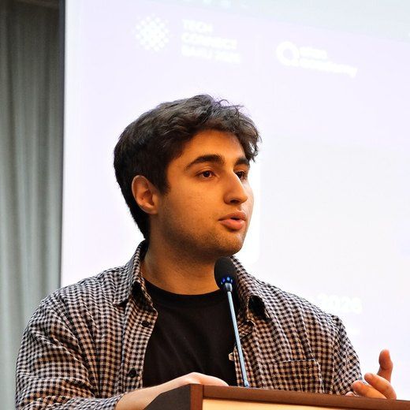
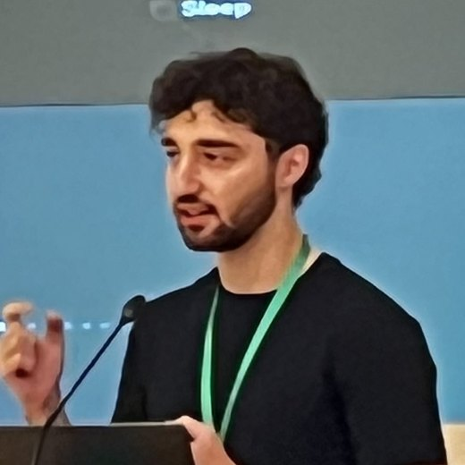

İanə etməzdən əvvəl yoxlayın
Tibbi ianə kampaniyalarını sənəd, süni intellekt və MyGov ilə yoxlayan və pulu dələduzlardan qoruyan platforma
İanəçilər
Xəstə uşağın ailəsi
Dələduz
0 manat
İnsanlar xəstə uşağa kömək etmək üçün pul göndərir
Amma pul ailəyə yox, dələduzun kartına gedir
INSTAGRAM, 2025
200 000 manat
xəstə körpələrin foto və videoları ilə toplandı
Pul ailələrə yox, dələduzun öz kartına getdi
Mənbə: Daxili İşlər Nazirliyi, mia.az, 16 dekabr 2025
zehra_ucun_yardim
[xəstə uşağın fotosu]
Zəhranın 3 gün ərzində əməliyyat olunması lazımdır, hər manat önəmlidir
Kart: 4169 7388 XXXX 2231
Oğurlanmış foto
Təcili hekayə
Şəxsi kart nömrəsi
İanəçinin bunu yoxlamaq imkanı yoxdur
Nümunə post uydurmadır
AZƏRBAYCAN, 2024
22,4 mln manat
16 804 kiberdələduzluq hadisəsində oğurlanıb
Mənbə: Daxili İşlər Nazirliyinin mətbuat xidməti, APA, 5 fevral 2025
Ailə
Sənədlər
Süni intellekt
MyGov
İanəçilər
Yayımda
Başqa platformalar
instagram.com/p/zehra
Yoxla
Dələduzluq

Yalnız yoxlanmış kampaniyalara ianə edirlər
Kampaniyalarının real olduğunu sübut edirlər
Başqaları üçün topladıqları pulu şəffaf göstərirlər
BİZNES MODELİ
İanəçi
Ailə
100 manat
2 manat
Safefund
Ailə ianənin hamısını alır, 2% haqqı ianəçi ödəyir

Layihə meneceri
Banklar ianələr üçün gündə 5 köçürmə limitini qaldırmaq istəyir, amma dələduzluq riskinə görə edə bilmir
Belə bir həll axtarırlar
Safefund banklarla inteqrasiya oluna bilər
ABB-nin layihə meneceri ilə söhbət, noyabr 2026; bankın rəsmi mövqeyi deyil
İndiki üsul
Instagram və şəxsi kart
Yerli
layf.az
Qlobal
GoFundMe
Biz
Safefund
Tibbi sənədləri yoxlayır
Kopyalanmış və saxta müraciəti avtomatik tutur
Təşkilatçının kimliyini dövlət bazası ilə yoxlayır
Başqa platformalardakı postları yoxlayır
Manatla, Azərbaycanda işləyir
Mənbə: layf.az saytı və GoFundMe şərtləri, noyabr 2026. Yarım dairə qismən deməkdir
İNDİ, MVP
AZƏRBAYCAN
MƏRKƏZİ ASİYA
Şımkənd, 2024: saxta səhifə 6 000 köçürmə ilə 32 mln tenge topladı
QLOBAL
442 mlrd $
hər il dələduzlara itirilir
Mənbələr: Tengrinews, sentyabr 2024; Global Anti-Scam Alliance və Feedzai, Global State of Scams 2025

Luhive.com təsisçisi

Mobil developer, Push30
Tibbi ianə kampaniyalarını sənəd, süni intellekt və MyGov ilə yoxlayan və pulu dələduzlardan qoruyan platforma
safefund.vercel.app
ƏLAVƏ, DƏLƏDUZLUQ RƏQƏMLƏRİ
| Üsul | Manat | Hadisə |
|---|---|---|
| Lotereya və qumar vədləri | 2 450 403 | 471 |
| Saxta linklər | 2 043 896 | 1 027 |
| Saxta mağaza elanları ilə zənglər | 1 196 786 | 411 |
| Bank əməkdaşı kimi təqdim olunma | 598 048 | 290 |
| Cəmi, xaricdən kibermüdaxilə | 22 442 838 | 16 804 |
Dünyada hər il dələduzlara 442 mlrd dollar itirilir
Mənbələr: Daxili İşlər Nazirliyinin mətbuat xidməti, APA, 5 fevral 2025; GASA və Feedzai, Global State of Scams 2025
ƏLAVƏ, RƏQABƏT
| Alternativ | Çatışmazlıq |
|---|---|
| Instagram-da şəxsi kartlar | Yoxlama yoxdur, gündə cəmi 5 köçürmə mümkündür |
| GoFundMe və qlobal platformalar | Öz şərtlərinə görə təşkilatçını yoxlaya bilmirlər, manatla işləmirlər |
| Link skanerləri | Müraciəti, kartı və sənədləri oxumurlar |
| Banklar | Yalnız öz kartlarını görürlər, ona görə bizim müştərimizdirlər |
| layf.az xeyriyyə fondu | Sənədləri əl ilə, 1–3 iş günündə yoxlayır; süni intellekt, MyGov və başqa platformalardakı postların yoxlanması yoxdur |
ƏLAVƏ, HÜQUQİ TƏRƏF
1
Pul lisenziyalı bank və ya ödəniş təşkilatı vasitəsilə birbaşa alana gedir
2
Bu, ianə deyil, ianəçinin ödədiyi yoxlama xidmətinin haqqıdır
3
Yeni kraudfandinq qanunu yalnız səhm və borc modellərini tənzimləyir, ianələri yox
Mənbə: ICNL (2018); 450-VIIQ saylı qanun, 24 yanvar 2027-dən qüvvədədir; hüquqşünas rəyi gözlənilir
ƏLAVƏ, TƏHLÜKƏSİZLİK
1
Tibbi fayllar AES-256-GCM ilə şifrələnib saxlanılır
2
Bazada yalnız onun HMAC heşi qalır
3
Yalnız heşi və son 4 rəqəmi saxlanılır
4
Hər ianə əvvəlkinin heşi ilə zəncirlənir, dəyişiklik dərhal görünür
5
Təkrar istifadə heşi, redaktə izləri və süni intellekt baxışı
6
Real xəstə, bank və ya MyGov sistemi istifadə olunmur
Fayllar Frankfurtdakı (AB) bağlı yaddaşda saxlanılır; MyGov hələlik test mühitidir
Bir bankla bazarın böyük hissəsini əhatə etmək olar
Orada da eyni uşaq fotosu ilə dələduzluq edilir
İstənilən ölkədə banklar və platformalar üçün
442 mlrd $
hər il dələduzlara itirilir
Mənbə: Global Anti-Scam Alliance və Feedzai, Global State of Scams 2025